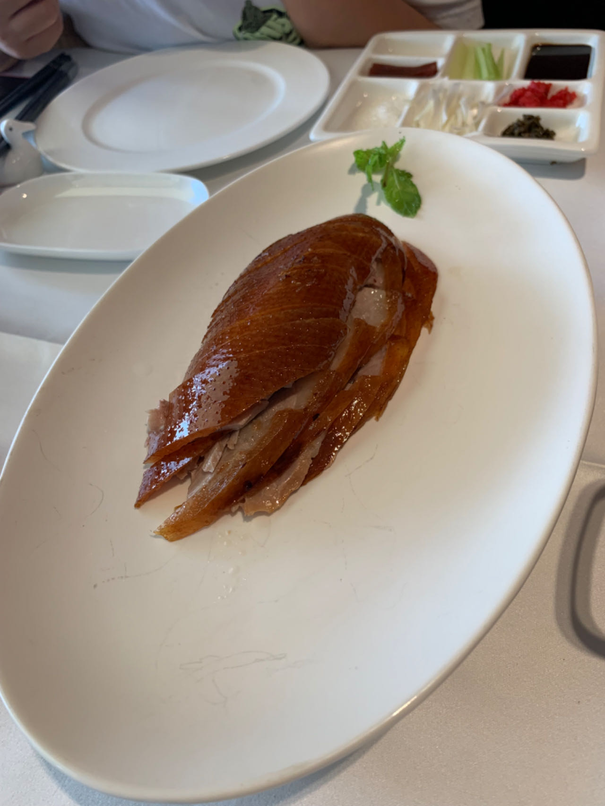

Beijing
Beijing cuisine, also known as Jing cuisine, Mandarin cuisine and Peking cuisine and formerly as Beiping cuisine, is the local cuisine of Beijing, the national capital of China.

Beijing cuisine, also known as Jing cuisine, Mandarin cuisine and Peking cuisine and formerly as Beiping cuisine, is the local cuisine of Beijing, the national capital of China.